Getting Started¶
Dash welcomes new merchants and supports integration through a standardised onboarding process. It’s easy to begin accepting payments in Dash and enjoy the following benefits:
Settlement within seconds and clearance within minutes
Ability to accept payments from any market around the world
Irreversible transactions to prevent fraud
Advanced privacy for both customers and merchants
Lowest fees in the industry
To get started with an integration in your sales system, simply select an online or point of sale payment solution from the lists below. If you are unsure, GoCoin is a popular choice due its support for InstantSend, while CoinPayments supports the largest range of online shop software. Anypay is an incredibly simple solution for retail stores, and also supports InstantSend. Larger integrations may require some customisation or cooperation with a specialist payment processor such as ePaymints. This documentation also describes the administrative and technical steps required to integrate various Dash services.
Any Dash received in payment can be automatically converted to the fiat currency of your choice using services such as Uphold. Simply select the card for the target currency and click Add funds -> With cryptocurrency. Any cryptocurrency deposited to this address will immediately be converted to the target fiat currency at the time of deposit.
Many major merchants accept Dash - check out Bitrefill or CheapAir for examples of what merchant integration can look like. Once you are up and running accepting Dash, consider adding your business to the directory maintained at Discover Dash for increased visibility.
Payment Processors¶
This section lists known payment processors supporting Dash and the business platforms they support. Please conduct thorough research before choosing a payment provider to ensure your needs will be met.
- alt thirty six
-
Alt Thirty Six allows any business (including those involved in cannabis) to accept digital payments at the point of sale and online using Dash or USD.
- Anypay
-
Anypay offers easy, professional tools for retail, as well as Dash rewards for users shopping at your store. Anypay is enjoys broad support from the Dash community, works to bring you new customers and is cheap and easy to set up.
- BTCPay Server
-
BTCPay Server is a free, self-hosted and fully open-source cryptocurrency payment processor designed with security, privacy and censorship-resistance at its core.
- CDPay
-
CDPay offers API to accept Dash on your website, as well as an automated fiat exchange service to convert the payments you receive to EUR or CZK.
- Coinify
-
Coinify offers a variety of two-way virtual currency services tailored to businesses and customers of different sizes and needs. A simple, secure and compliant solution that allows you to accept virtual currencies without having to hold any currencies yourself, and get payouts in your preferred local currencies.
- CoinPayments
-
CoinPayments is an integrated payment gateway with a wide range of plugins available for popular webcarts, as well as fiat settlement in the US and Europe.
- Coinremitter
-
Coinremitter is a secure and reliable payment gateway with no monthly fees. Features include built-in exchange, automatic withdrawals and no ID or bank account required.
- CoinsPaid
-
Coinspaid offers a white label backoffice payments solution with on-the-fly Fiat (EUR) conversion and instant transaction confirmations.
- CopPay
-
CopPay allows you to accept Dash and receive EUR, GBP and USD, eliminating volatility risks. CopPay is absolutely free with 0% transaction fee for merchants.
- EletroPay
-
EletroPay is a hardware point of sale device with an ePaper display and built-in receipt printer designed to bring businesses into the digital economy in style.
- ePaymints
-
ePaymints specializes in highly customized payment processing for high risk merchant accounts in industries challenged with high levels of chargebacks.
- GB CAS
-
https://www.generalbytes.com/en/products/cas-server
Take the professional approach and start accepting Dash with a dedicated CortexPay terminal and GB CAS. This software can also be used to sell Dash to clients visiting your location.
- GoCoin
-
The GoCoin platform makes taking Dash as easy as installing a plugin in your webshop. Payment processing is already implemented for every major shopping platform.
- GoURL
-
GoURL offers a range of plugins and APIs to accept Dash online. White label solutions to process payments with your logo and on your server are also available.
- iQCashNow
-
iQCashNow offers ATMs and mobile POS terminal systems that combine traditional payment methods and crypto-payments into a unique complete package of software, hardware and services.
- NOWPayments
-
NOWPayments is an easy way to accept cryptocurrency payments with native integration into your platform or a neat widget. Auto coin conversion keeps you safe from any dramatic rate fluctuations.
- Paytomat
-
Paytomat provides software for integration into existing merchant systems without the need to purchase additional hardware or install third-party software.
- PumaPay
-
PumaPay provides a fast, efficient and inexpensive alternative to credit cards to empower your digital customer. We provide the all the tools enabling you to start accepting cryptopayments today.
- QR.cr
-
QR.cr is a popular and well-supported dynamic QR code system designed to provide multilingual content and payment services for businesses via mobile friendly landing pages.
- Salamantex
-
The Salamantex crypto payment service is available as a hardware terminal or software for installation on existing POS systems or mobile devices.
- Spark
-
Spark is simple, 100% open source software for accepting Dash payments. Designed from the ground up to be familiar and with wide community support, all keys and funds remain in your control at all times.
- VegaPay
-
https://vegapay.vegawallet.com/
VegaPay provides the perfect way to prepare your business for the future. Start accepting cryptocurrency payments to reduce costs and improve customer conversion rates with the full Point of Sale or other business solutions.
- Xpay
-
Xpay is a popular point of sale device in Venezuela and Colombia, allowing you to quickly accept Dash using QR codes.
Installation Examples¶
This section contains worked examples of how to install, configure and process your first payment using the payment processors listed in this documentation.
WooCommerce and GoCoin¶
If your online store is built on WooCommerce, you can simply install GoCoin as an additional payment gateway and immediately begin accepting Dash. This guide assumes you have already installed Wordpress, installed WooCommerce and created at least one product in your store.
Go to the gocoin-woocommerce GitHub Releases page and download a zip file of the latest version of the plugin, as shown below. In your WordPress administration backend, select Plugins -> Add New and then click Upload Plugin. Click Choose File and select the file you just downloaded, then click Install Now and Activate Plugin.
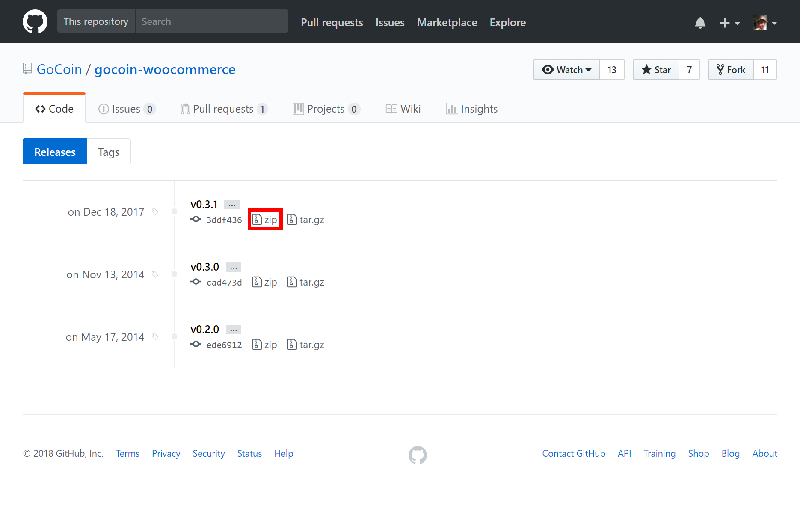 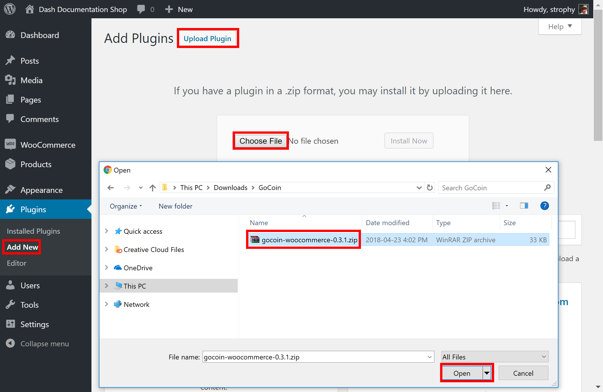{kind=link}
{kind=link}
Next, go to the GoCoin merchant sign up page and create an account. Once you are logged in, go to Preferences, select Dash and click Add DASH Address to add a payment withdrawal address. You will receive an email with a link to confirm the address. Next, go to Developers and copy the Merchant ID into a temporary text file. Next, click Get Key to display a valid API key. Copy this key into your temporary text file as well. Finally, you can optionally add a Dash logo to your checkout by Profile section and clicking Logo -> Upload.
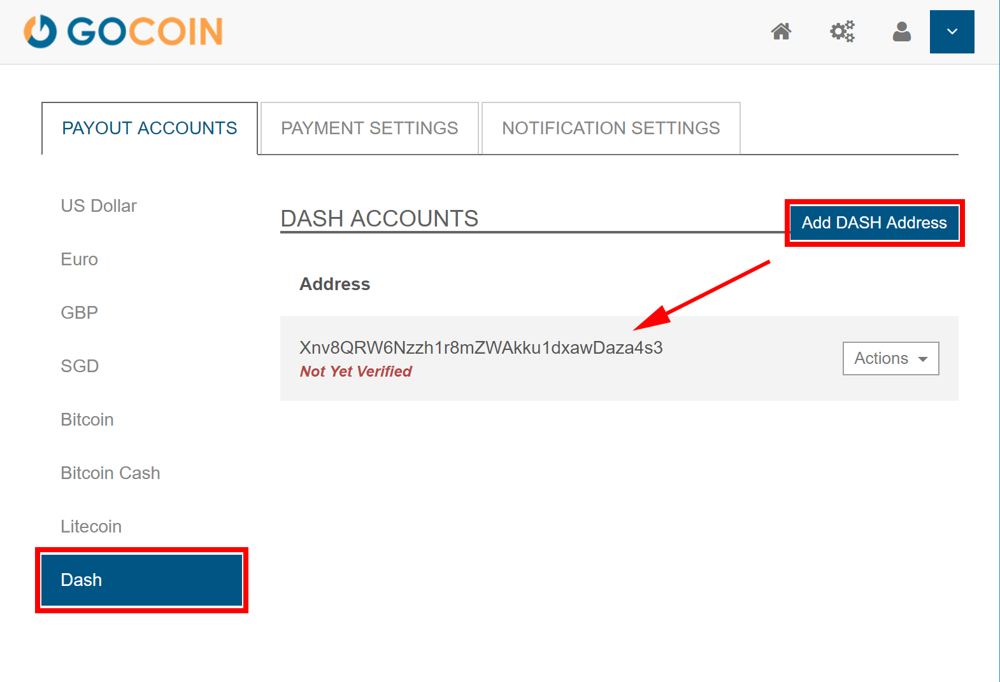 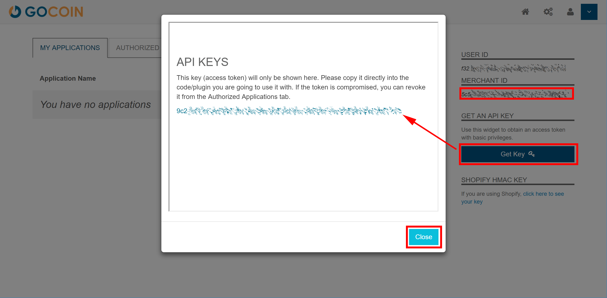{kind=link}
{kind=link}
Back in the WordPress plugins section, click the Settings button for the WooCommerce plugin and navigate to Checkout -> GoCoin section. Ensure the GoCoin plugin is enabled here, then enter the Merchant ID and API Key in the appropriate fields as shown below, modifying the other fields as necessary. Click Save changes when you are ready.
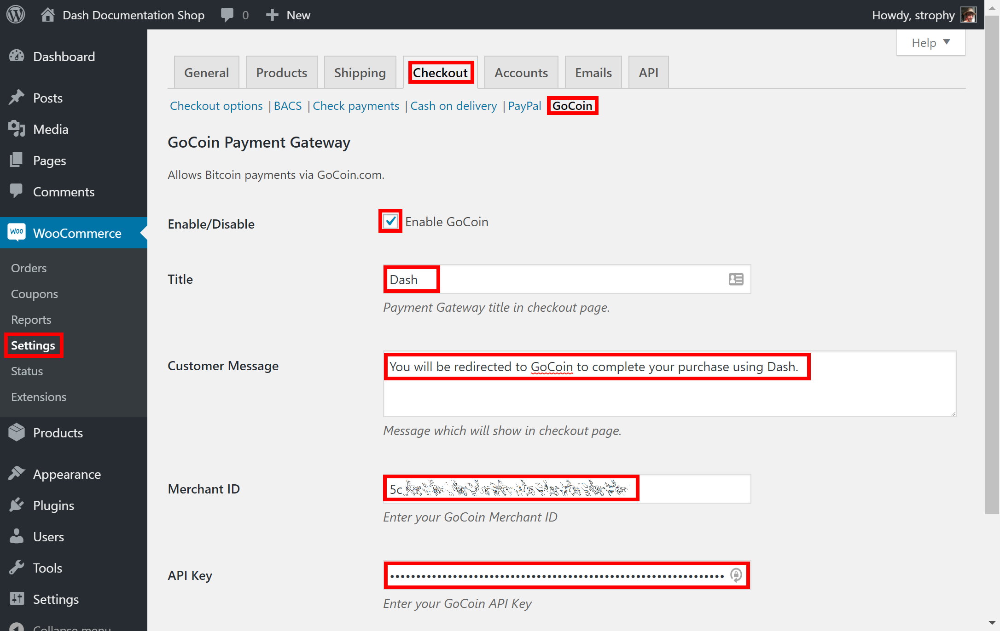{kind=link}
Your customers will now see an option to pay with Dash when completing the checkout process for an order. The payment will be processed by GoCoin, and you will receive emails detailing each purchase procedure. You can choose how often you want to withdraw your payments, to which Dash address and various other options in the GoCoin administration section. See the GoCoin Documentation for more information.
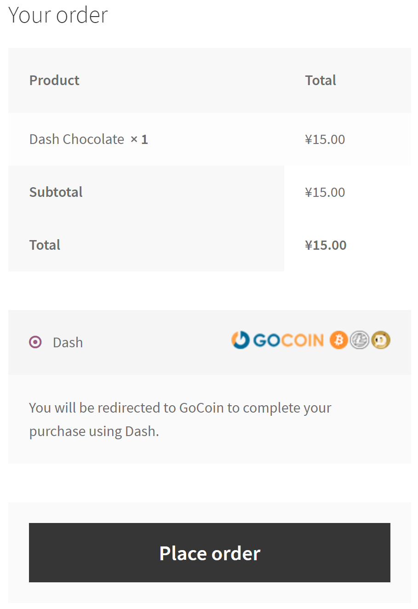 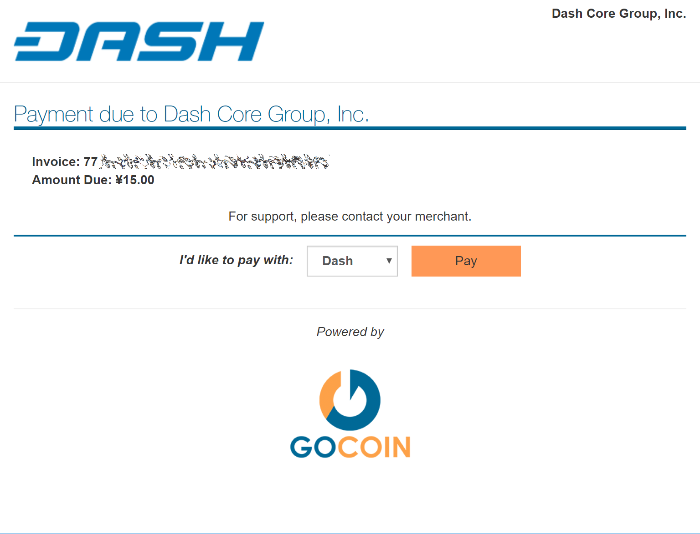 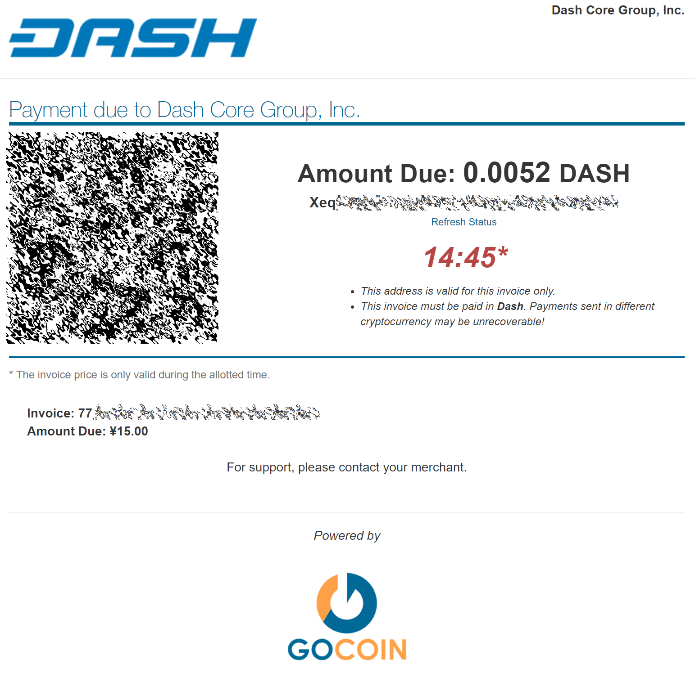{kind=link}
{kind=link}
{kind=link}
{kind=link}
WooCommerce and CoinPayments.net¶
If your online store is built on WooCommerce, you can simply install CoinPayments as an additional payment gateway and immediately begin accepting Dash. This guide assumes you have already installed Wordpress, installed WooCommerce and created at least one product in your store. A video of the process to install the CoinPayments payment processor is also available.
In your WordPress administration backend, select Plugins -> Add New and type “coinpayments.net” into the search box. A plugin named CoinPayments.net Payment Gateway for WooCommerce should appear. Click Install Now to install the plugin. Alternatively, you can download the plugin from the WordPress website as a zip file and upload it using the Upload Plugin button. Once the plugin is installed, click Activate to begin configuration.
{kind=link}
Next, go to CoinPayments.net and sign up to create an account. Once you are logged in, go to Account -> Coin Acceptance Settings and enable Dash, as well as optionally entering a withdrawal address. Next, go to Account -> Account Settings and copy Your Merchant ID from the Basic Settings area into a text file. Then navigate to the Merchant Settings section and enter a long, random series of characters for the IPN Secret. Copy this code to your temporary file as well.
Back in the WordPress plugins section, click the Settings button for the WooCommerce plugin and navigate to Checkout -> CoinPayments.net section. Ensure the CoinPayments plugin is enabled here, then enter the Merchant ID, IPN Secret and Description in the appropriate fields as shown below. Click Save Changes when you are ready.
{kind=link}
Your customers will now see an option to pay with Dash when completing the checkout process for an order. The payment will be processed by CoinPayments.net, and you will receive emails detailing each purchase procedure. You can choose how often you want to withdraw your payments, to which Dash address and various other options in the CoinPayments administration section. See the CoinPayments Documentation or Merchant Tools for more information.
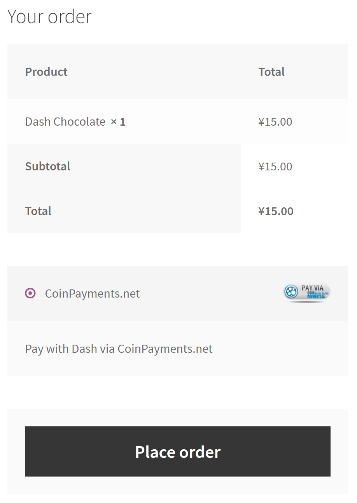 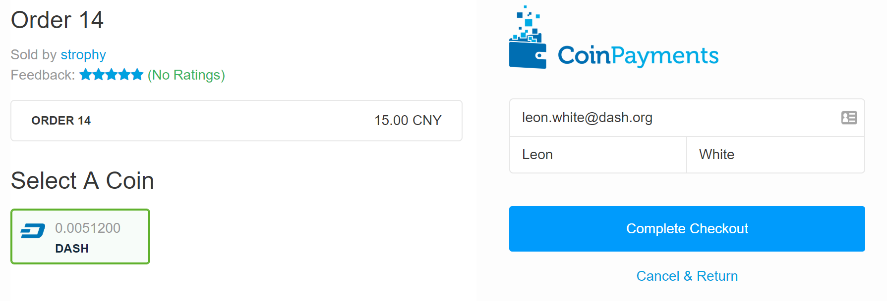 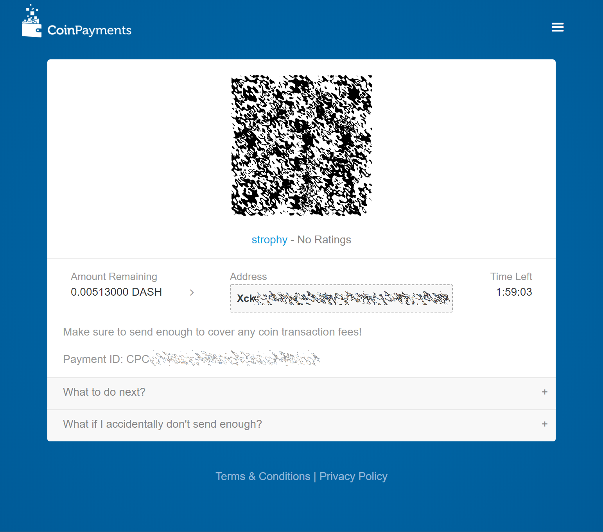{kind=link}
{kind=link}
{kind=link}
{kind=link}
Point-of-Sale with Anypay¶
Anypay.global allows you to quickly start accepting point-of-sale payments in Dash at a physical store. The service functions as a simple website that you load on any internet- connected and touch-enabled device, such as a smartphone or tablet.
Begin by registering an account with Anypay. You will be asked to specify an email address and password. Once you are signed in, you must add a Dash payment withdrawal address.
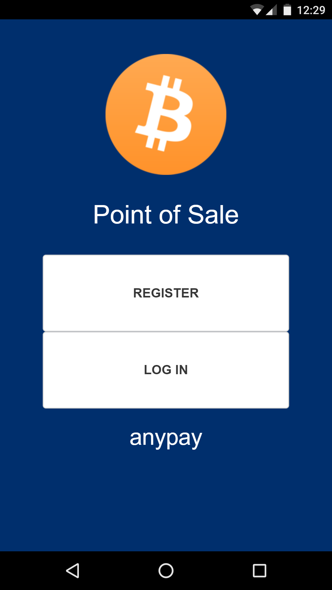 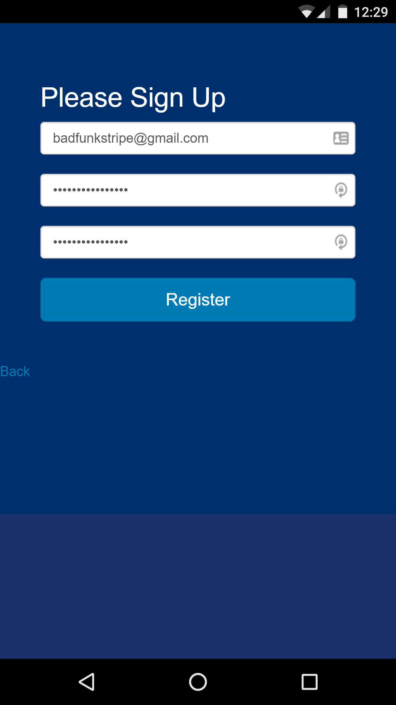 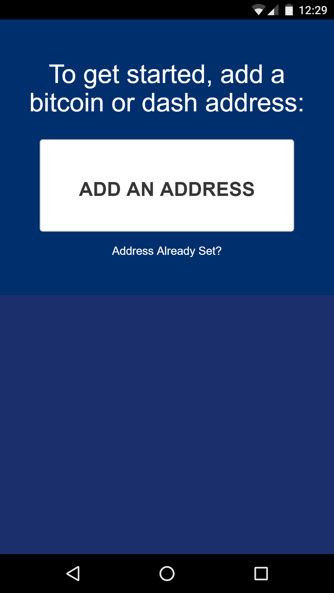{kind=link}
{kind=link}
{kind=link}
{kind=link}
Once this has been set up, you can begin processing payments immediately. Simply log in to https://app.anypayinc.com or tap Merchant Point of Sale App in the admin area using your device. A keypad will appear. Enter the invoice amount in USD or DASH and press the COLLECT button at the bottom of the screen. The app will generate a QR code for your customer to scan. Once payment is complete, you will be able to create a new invoice by tapping Next Payment, or view the status of your invoices by tapping the menu button in the top left corner of the keypad, or checking the Invoices section of the administration backend. Withdrawals are processed to the address you specified shortly after payment is complete.
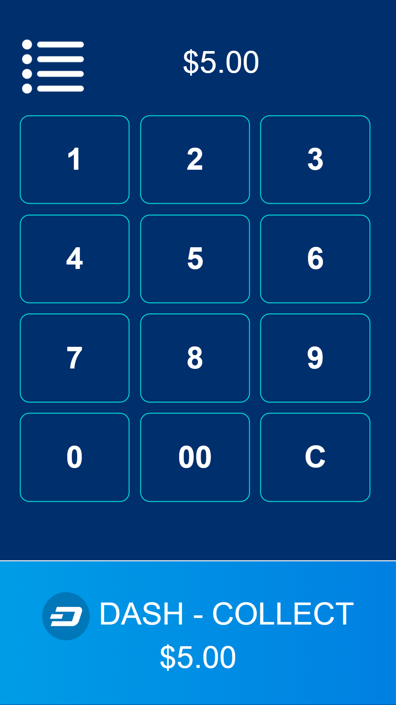 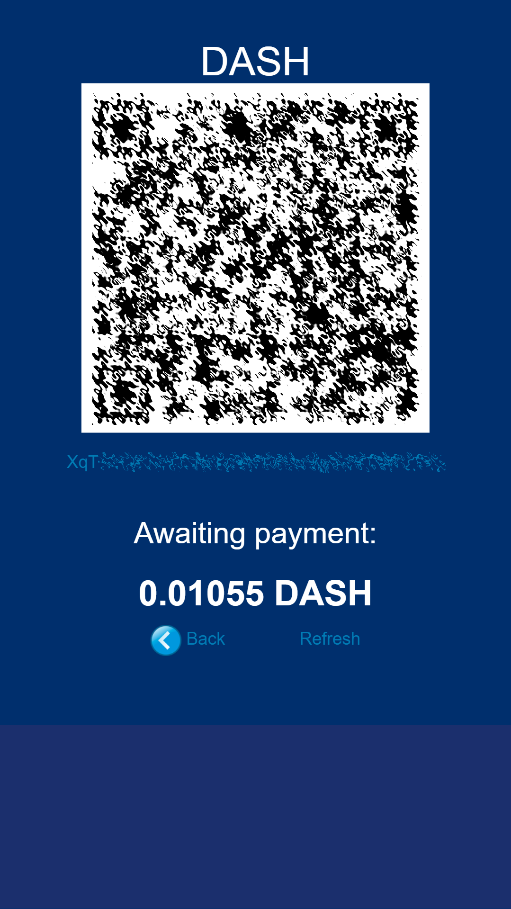 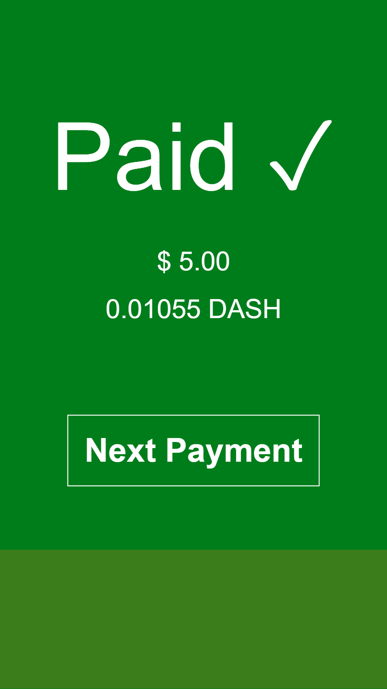{kind=link}
{kind=link}
{kind=link}
Point-of-Sale with Spark¶
Spark Payments allows you to quickly start accepting point-of-sale payments in Dash at a physical store. The system works as an app, and is available for Android, macOS, Windows and Linux, with an iOS progressive web app (PWA) in development.
The project is an external terminal application for processing Dash payments in brick and mortar stores. The merchant types the sale amount in their local currency (94 currencies supported), the application will generate a QR code sale for the proper amount of Dash for the customer to scan. Then the terminal will provide feedback on the status of the payment (received, timed out, partial, instantsend or regular), and if set up - fiat conversion through uphold.com. A guide on how to set up Spark with Uphold to convert payments to fiat currency is available in English and German.
To use Spark, open the app on your device. If this is the first time you are using the app, you will need to specify a Dash address to receive payments from the system, as well as your chosen fiat currency. You can change this information at any time from the menu. To generate a payment invoice, enter the amount in fiat currency. Spark will generate a QR code containing your specified address and the requested amount, denominated in Dash. The customer scans the QR code, and the app will display a visual indication when payment is complete.
{kind=link}
Payment systems like Anypay and Spark can be integrated with your existing terminal and/or accounting software (such as Square Register, by recording sales invoiced in Dash as an Other Payment Type in the system. This allows you to keep track of your Dash income as easily as if you were accepting cash.